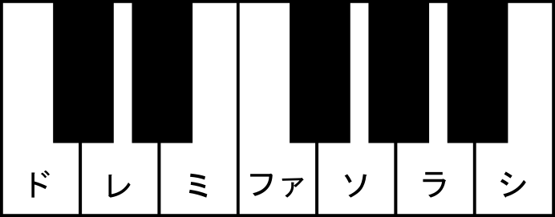
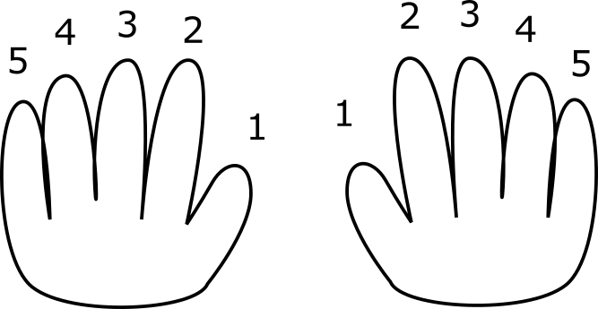

まずは、指使いからやりましょう！
以下の内容は、僕自身がピアノ教室で練習し経験したことに基づきます。書いている当時がとても未熟であったため、誤解や勘違いが多くあります。
特に、ピアノ教室の先生に多くのことを教えていただきました。
作詞・作曲した歌に僕の作った歌の詞と楽譜があります。
ピアノは、誰にでも弾くことの出来る楽器で、それも、決まりや法則性は本当に単純で、統一されています。
このピアノ入門では、ピアノを全く弾くことが出来ない人にも、楽しくピアノの基本を伝授したいと思っています。
では、ドレミファソラシドを弾いてみましょう！
まず、ドの位置がどこなのか、皆さんは分かりますか？
ピアノの鍵盤には、白:黒というグループが3:2の短い部分と4:3の長い部分がありますが、この短い部分の左端がドです。白鍵だけを見た時に、ドの右の白鍵がレになり、そのままミ、ファ、ソ、ラ、シ、ドと続いていきます。
鍵盤はこんな感じになります。
音楽には、「オクターブ」と言うものがあります。
それは、「ド」「レ」「ミ」「ファ」「ソ」「ラ」「シ」「ド」「レ」と言う風に、ドからシのそれぞれの音が、連続的に続いていく、と言うものです。
「シの後がド」と言う点に注意しましょう。これは、「音階」として、永遠に続いていきます。
そして、「半音（半音階）」と言うものもあります。これは、「音と音の間の音」と言う意味で、＃（シャープ）や♭（フラット）をつけて表します。
例えば、ドとレの間の音は、「ド＃（ドシャープ）」あるいは「レ♭（レフラット）」となります。
では、音階を弾いてみましょう！
まず、ドの音は、ここでは親指（１の指）で弾くことにします。
ピアノを弾く時は、右手でも左手でも、親指を「１の指」として、人差し指を「２の指」、中指を「３の指」、薬指を「４の指」、小指を「５の指」と言います。
１の指から、ド、レ、ミ、ファ、ソ、と弾いてください。
鍵盤には白い鍵盤（白鍵）と黒い鍵盤（黒鍵）がありますが、白鍵の「ド」の右の次の白鍵盤が「レ」で、そのままミ、ファ、と続いていきます。黒鍵は半音です。
そうすると、一つ疑問が出てくると思います。
それは、「ソの次の音を弾くために、指が足りない」と言うことです。
ここで、弾き方のテクニックがあります。
それは、「３の指でミを弾いたら、その次は１の指（ドを弾いた指）をくぐるように動かして、１の指でファを弾く」と言うことです。
そのように弾けば、ドレミファのファで指を１に戻して、ソラシド、まで弾けると思います。
この技術は、非常によく出てきます。もう一つ、ドシラソファミレド、と言う、「上から下へと音階を下がる時」にも、くぐり方があります。
こちらは、「１の指でファを弾いたら、３の指を覆いかぶさるように動かして、３の指でその次のミを弾く」と言うものです。
練習してください！
色んなメロディを滑らかに弾けるようになったと思います。
それでは、今度は五線譜を見ていきましょう。
まず、五線譜は、「右手と左手に分かれている」ことに注意してください。
そして、右手の方にも、左手の方にも、一番左に、ひときわ大きな記号がついています。これを、ト音記号とヘ音記号と言います。
この、ト音記号とヘ音記号によって、五線譜に書かれている音符の音が決まってきます。
基本的に、ト音記号は一番下のドからドレミファソラシド…と上がっていきます。逆に、ヘ音記号は一番上からドシラソファミレド…と下がっていきます。ドは五線譜の一番下の線ではなく、そのもう一つ下の「補助線のような線」の上であることに注意してください。基本的に、ト音記号は真ん中の線がシ、ヘ音記号は真ん中の線がレであると覚えると良いでしょう。
右手のメロディラインにはト音記号、左手の伴奏にはヘ音記号を用いるのが一般的です。五線譜をト音記号で読むのか、あるいはヘ音記号で読むのか、この2つが最初の「初心者の壁」になります。自分は今でもよく間違えます。
音階を図で見たい方は、以下のページが参考になります。
まず、五線譜には、「線の上に書かれている音符」と、「線と線の間に書かれている音符」があります。
この１つ１つの線を１つ１つ上に上っていき、下に下がっていくことで、音階を表しています。
覚えるしかないのですが、覚えるために、「ラドミソ・ミソシレファ」と言う魔法の呪文を使います。
この呪文は、ヘ音記号は「線と線の間」、ト音記号は「線の上」にある音符の、それぞれの音のことを表しています。
どちらがヘ音記号なのかト音記号なのか分からなくならないために、線と線の間と線の上を区別します。
この、ラドミソ・ミソシレファを、覚えてください。そうすると、メロディ・ラインが分かると思います。
覚えるのが難しいと言う人は、「五線譜は味噌（ミソ）の法則」と覚えると良いでしょう。
五線譜はこんな感じになります。
後日注記：ドレミファソラシの音階は、1オクターブで全部で7音です。しかしながら、五線譜は線だけを見ると9音あります。このため、ヘ音記号とト音記号では、2音ずつずれてしまいます。ト音記号のミの位置は、ヘ音記号では2音上がってソになります。注意しましょう。
後日注記：なぜ五線譜の音階がこのようになっているというと、美しいからです。ドが中心となり、それよりも高い音がト音記号、低い音がヘ音記号になって、真ん中をドにした上で線対称に無限に続いていきます。
では、それぞれの音符と拍子を見ていきましょう。
音符は、まず、白い音符と黒い音符があります。そして、それにオタマジャクシのしっぽのようなものがついています。
それから、しっぽには「ひれ」のようなものがつくこともあります。これは、一重だけではなく、二重、三重につくこともあります。
これで、音の長さを表します。
一番長いものは、長さが４で、次に、２、１、0.5、と言うように、どんどん半分になっていきます。
拍子が「四拍子」の時は、４が一番長くて、１を４つ続けると４と同じ長さになります。
白い音符は、しっぽがついていないものが４（全音符）、ついているものが２（２分音符）です。
黒い音符は、しっぽに何も「ひれ」がついていないものが１（４分音符）、「ひれ」が１つのものは0.5（８分音符）、ひれが２つのものは0.25（16分音符）となります。
注意が必要なのは、音符に「ドット」のような点がついているものがありますが、これは長さが「1.5倍」になります（付点音符）。
ですから、１の音符にドットがついていると1.5になり、２の音符にドットがついていると３になります。
それから、これらに「タイ」や「スラー」がつくことがありますが、タイがつくと、複数の音の長さを合計して、その音まで続けるようになります。
スラーは、滑らかに弾くための記号ですが、こういう記号が色んなところでついてきます。これが、五線譜の特徴です。
タイとスラーは、音符と音符の間に、滑らかな「帯」のようなものがつきます。同じ音同士をつなぐとタイ、違う音をつなぐとスラーです。
これ以外に、「三連符」と言う、同じ長さの音を３つ繋げて、「３分の１」のような音を表現することもあります。
また、半音上げる時は♯（シャープ）、半音下げる時は♭（フラット）をつけます。
休符は、音がない時に入ります。音符と同じように記号を使います。記号の見た目がいろいろあります。
拍子は、ト音記号やヘ音記号の隣にある、分数の「４分の４」や「４分の３」と言った表示です。
４分の４は、４つの音で一小節になります。４分の３の時は、３つの音で一小節になります（ワルツ）。
通常の４拍子の曲では、音符と休符を合わせて、ひとつの章が４つの音になります。これに対して、３拍子の曲では、音符と休符を合わせて、ひとつの章が３つの音になります（「ワルツ」と言います）。
調子は、拍子の左にシャープやフラットを指定することで表記します。
ない時もありますが、たまにあると「何じゃこりゃ」と言うぐらいついていることもあります。
シャープがついている時は、その音階の全ての音にシャープがついて、半音上がります。
また、フラットがついている時は、その音階の全ての音にフラットがついて、半音下がります。
忘れてはならないのが、指使い番号です。１から５まで、指の使い方が書いてあることがあります。
指使い番号はこんな感じになります。
では、右手と左手を弾いて見ましょう！
弾く時のコツは「覚えて弾くだけではなく、曲が上下にどう上がったり下がったりしていくか」を見ることです。
最初のうちは、ト音記号とヘ音記号を読む格闘になると思います。
右手は、主に、メロディラインを弾いています。難しいのは左手を右手につけることですが、良く考えると、左手は単純で、コードを弾いているだけのことが多いです。
まず、一小節ずつ、そして右手と左手を分けて、覚える練習をしましょう。
特に、読みづらいのが「和音」です。
和音は、二つ以上の音を一緒に弾きます。間違えると、おかしな不協和音になりますが、きちんと弾けると、美しい音色が出ると思います。
演奏編の講義はここまでです。次は、作曲編です。
作曲を行う場合は、曲の要となる「テーマ」を決めましょう。
簡単なメロディでも良いので、メロディを作ってみてください。鼻歌感覚で作ってもらって構いません。
そして、AメロとBメロを作ります。
楽曲には、AメロとBメロに分かれている楽曲が多いです。さらにCメロやサビを作ることもあります。Aメロをコピーして多少変えたA´（Aダッシュ）を作って、A→B→A´と作ってみましょう。
次は、左手にメロディをつける練習です。
これにはパターンがあって、それは、「ドミソ・シレソ・シファソ・ドミソ」となるか（１）、「ドミソ・ドファラ・シレソ（シファソ）・ドミソ」となるか（２）、「ドミソ・ドファラ・ドミソ→シファソ・ドミソ」となるか（３）、「ドファラ・ドミソ・シファソ・ドミソ」になるか（４）があります。
そして、これをAメロとBメロに分けて、Aを１＋２、Bを４＋４、A´を１＋３、と言った風に作っていきます。
これに、右手のメロディをつけていけば良いのです。
（上に書いた、ドミソ→シファソは、半分の長さで変えるように、と言う意味です。）
コード進行はこれ以外にもたくさんあるので、コード進行を参照のこと。
最後に、作詞をしましょう。
歌手の方でも、曲を先に作って、詞を後からつける、と言う話を聞くことがありますが、それに習いましょう。それが一番簡単に歌詞が作れます。
出来たら、ぜひ弾いて見ましょう。楽しい歌を沢山作ってください！
ピアノの世界観２（コツ・練習）に色々と内容があるので、「初心者以上のピアニストになりたい」という方はそちらも参照してください。